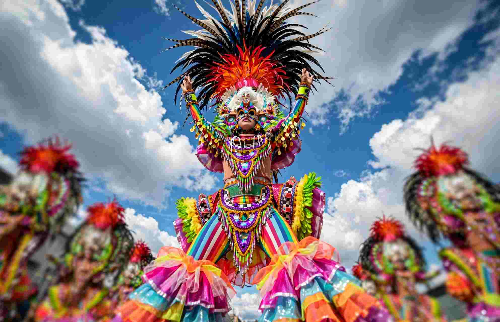

MassKara is known for its masks and its street dancers, but during festival week the city also turns into one long food walk. Grilling kiosks line the streets near the Government Center, carts gather on Rizal Street, and stalls spill along Lacson. This guide covers the dishes worth your appetite, the places that serve them, and a simple way to pace your meals between the parades.
Prices and kiosk locations change from year to year, so confirm the figures below at the counter before you budget. The food itself does not change much, and the advice holds for any MassKara week.
Start With Chicken Inasal at Manokan Country
Chicken inasal is Bacolod's signature dish, and the best place to try it is Manokan Country, a cluster of family-run stalls near SM City Bacolod. Each stall keeps its own marinade, usually built on calamansi, garlic and annatto oil. The chicken is grilled over charcoal and basted as it cooks, so the skin turns smoky and slightly crisp while the meat stays juicy. A plate of paa (leg) or pecho (breast) with rice cost roughly ₱120 to ₱150.

Walk the row before you order. The stalls differ in how sweet, sour or salty their marinade is, and many offer extra chicken oil to pour over rice. Lion's Inasal is known for a slightly sweeter marinade and generous portions, and it tends to fill up in the evening, so go before 7 p.m. if you want a seat. Nenas Beth Inasal is a quieter option for a budget lunch.
Sit Down for Inasal Across Town
If you want a proper table and air conditioning, Chicken House has branches on Lacson Street and in Mandalagan. Its portions are larger than the street-stall versions, and a meal with rice typically costs about ₱150 to ₱200. Aida's Chicken is popular enough to draw queues at its Manokan Country stall and at its Ayala Malls Capitol Central branch. The mall branch has a more modern setting and costs more, which makes it a sensible choice for a rainy afternoon.
Piaya: The Sweet Stop You Can Carry
Piaya is a thin, unleavened flatbread filled with muscovado, the dark unrefined sugar made from sugarcane. The dough is pressed out by hand, sprinkled with sesame seeds and baked on a griddle until golden. It is most closely associated with Negros Occidental, so you will find it at bakeries and market stalls throughout the city. Ube and mango fillings are sold too, but the muscovado version is the traditional one and the one to try first.
Look also for piayito, a smaller, crispier version that is easy to eat while you walk. The filling is sweet, so a few pieces go a long way. Buy only what you will eat within a day or two, because the thinner versions lose their crunch in humid weather.
The Kiosk Belt: Where the Food Is
Festival food is concentrated in a few zones rather than spread across the city. Organizers plan hundreds of food kiosks and carts for the festival. The grilling kiosks were grouped along Gatuslao, Gonzaga and San Juan streets, food carts lined Rizal Street in front of San Sebastian Cathedral, and a long run of stalls sat on Lacson Street. The Government Center grounds and the public plaza held more stalls beside the stages.
Lacson Street is the busiest and most colorful area after dark. On the final weekend it closes to traffic from mid-afternoon, which makes it easier to walk but also brings the biggest crowds. A practical route starts at the Government Center in the afternoon, then moves toward Lacson as the evening lights come on. For the festival schedule and road closures, see the MassKara 2026 final weekend guide.
Pacing Your Eating Between the Parades
The most common mistake is eating too much too early. Plan one proper meal a day, ideally inasal at lunch, and graze in the evening on piaya, grilled skewers and whatever else catches your eye. Festival food is made for sharing, so three or four small orders with friends beats one large plate.
Carry small bills, since many kiosks prefer cash. Keep a water bottle with you and refill it whenever you pass a store, because heat and crowds drain energy faster than most visitors expect. Choose stalls with a steady stream of customers, which usually means fast turnover and fresh food. If a dish has been sitting uncovered for a long time, move on to the next stall.
Eat Away From the Crowds
The longest lines sit right on the parade routes. A few streets back from the main areas, small family-run eateries serve similar food at a slower pace, which suits a sit-down lunch when your feet need a rest. Mornings are the calmest time to find a seat, so an early breakfast gives you a comfortable start before the crowds build.
Many small eateries change their hours during the festival, and some close early on parade nights. Send the restaurant a message or check its social media page before you walk over. A few minutes of checking can save a long detour.
A Simple One-Day Route
Start late with rice and a light meal, then join the lunch crowd at Manokan Country for inasal before the afternoon events. In the late afternoon, walk toward Rizal Street for a cold drink and a piaya or two. Finish on Lacson for dinner and one last sweet on the way home. Keep it to two or three food stops, and leave room for a dish you did not plan to try.
If Bacolod is only the first stop on a longer eating trip, the Iloilo and Guimaras food trip picks up the story across the strait, with chicken inasal and Ilonggo dishes of its own.
What to Take Home
Sealed piaya packs travel best. Buy from established bakeries, ask how long the pack stays fresh, and keep it upright in your bag so the flatbread does not crack. Muscovado sugar is another easy gift and adds a local touch to a gift box.
Ask Where the Locals Eat
The best stall in Bacolod is often the one with a line of people who clearly know it. Ask a local where they go. Most people are proud of their food and happy to point you toward a favorite. Keep the route loose, and let your last bite be the one you remember on the flight home.